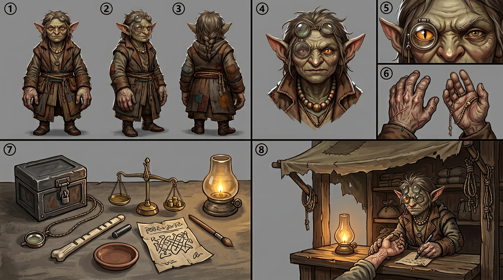

KESSA — model sheet
Chapter 001 · first appearance. The drawing reference for every page this character is on — the eight required panels — front · side · back · face · detail · hands · kit · action, in the house panel order, per the character art spec.

🔍 click to zoom
1front2side3back4face5detail (the loupe flipped down over her eye)6hands (palms up and down, a bead pushed along the tally-cord)7kit (strongbox, loupe, balance and weights, tally-stick, ash-ink, chit dish, blank pawnie ticket, lamp)8action (at the counter, reading a customer's marks through the loupe)
Drawing brief
- Body: small, broad, low centre of gravity. Moves little, but when she moves it is final.
- Hands: enormous for her body — scarred, knuckled, gentle anyway. They are the first thing drawn.
- Eyes: large Kshudra cat eyes that catch light. One is always covered by the loupe once she starts appraising — so she literally sees the world two ways. Use this in panels.
- Loupe: jeweller's loupe on a cord; pushed up on her brow when idle, flipped down over one eye when working. Canon is one eye covered and the uncovered eye doing the work, not which eye: the ref sheet's front-on portrait puts it on the viewer's left, and the open eye stays on the panel's light side.
- Clothes: layered pawned coats, mended with mismatched thread (she wears her own trade). A string of knotted tally-thread at her belt.
- Silhouette test: tiny broad body + huge hands + loupe cord.
Rule: Kessa is never drawn rushing. Stillness is her power. If a panel shows her mid-sprint, the scene is wrong.
Full written sheet, canon rules and card-game line: Kessa